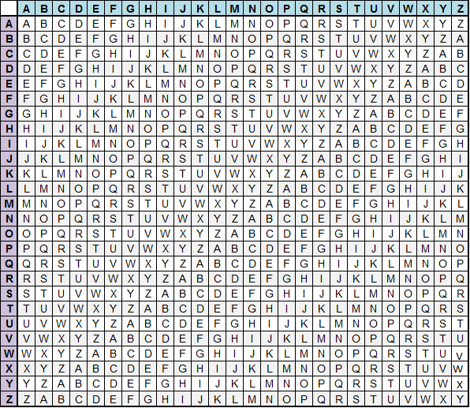

Magic of cryptography
Vigenere Cipher
Historical brief
More than fourteen centuries passed until Caesar cipher found its improved alternative. In 1467 Leaon Battista Alberti invented a metal disc to switch between different alphabets, however it was not very useful. 41 years later Johannes Trithemius described in his work "Poligraphia" his huge invention - Tabula recta. Tabula recta is two dimmensional array consisting od all possible shifted alphabets. In the first row there is not shifted alphabet, in the next row we can find alphabet shifted by one position right, next is alphabet shifted by two and so on and so on... You can find Tabula Recta on the image on the right. How to create encrypted text with Tabula Recta according to Trithrmius instruction? Simple and easy, Every next letter of text you want to encrypt you should take from next row of Tabula. Again as in the case of previous cipher it was not very applicative. However not cipher but Tabula found great application in Vigenere Cipher.

Tabula recta
Tabula recta
Blaise de Vigenere seems to be really sad Cryptographer, truth is that he is not the invetor of the cipher signed his name. We can find description of the Vigenere cipher in the "La cifra del. Sig. Giovan Battista Bellaso". Basing on Trithemius cipher work Bellaso improved cipher by adding counetsign. Key provided significant safety for the encrypted message. Bellaso's cipher required for users only strong security for the key so they were usually stated between useres in advance.
To tell the truth Blaise de Vigenere has something in common with Blaise's cryptology system. Vigenere made another improvement after Bellaso which was also connected with the key. This time Vigenere exchanged previous key which usually was one word or short pharse with autokey. Autokey is as in case of previous key a word or even one letter with appended message to it.
So lets say we want to encrypt a word "example" with autokey "z" the autkey becomes "zexampl"
Cipher description
Vigenere cipher belongs to an poliaphabetic, subtitution family of ciphers. If we want to encrypt a message using one of three ciphers described above we can use tabula recta. If we are encrypting a word using firss - Trithemius method we are looking at positions of plain text and we are exchanging them by letters read from following rows of tabula.In case of Bellaso or Vigenere version we are cancentrating on pair of letters: the letter from plain text and the letter from the key. We are looking at row with one of them and column with other one. Encrypted letter is at the cell where our column and row are crossing together.
Mathematical description
Processes of encryption and decryption look almost identically like in the Caesar cipher.
For changing text into cryptogram we are using following formula:
Ci = Mi + Ki) mod 26
Where:
Ci - Ciphertext letter
i - Index
Mi - Message at index i
Ki - Key at index i
Again we are using mod 26 baceause of a lenght of English alphabet. We can expand alphabet by special characters like white characters or numbers.
For decrypting text we are using formula:
Di = Ci - Ki) mod 26
Where:
Where:
Di - Plaintext letter
i - Index
Ci - Ciphertext at index i
Ki - Key at index i
Cryptoanalysis methods
Charles Cabbage was the first man who successfully broke the cipher. He divided message into the parts as long as the length of the key and then used statiscs to get decrypted text.
Next method of breaking the Vigenere cipher is the Kasinski method from 1863. Kasinski noticed that repeatitions in encrypted text may be encrypted with the same key letters. That observation may suggest the lenght of the key and finnaly break the exact keyword.
Other known method is descriped by William Friedman. Method found in 1920s is using index of coincidence. It is used to measure uneveness of the cipher letter frequencies.
Unbreakable?
Vigenere cipher can be unbreakable. However three conditions must be fullfilled:
- Key must be as long as the text which we are encrypting
- Key must be totally random string of letters
- We have to use one key for encryption only one message
If You want to try Caesar cipher in practice click